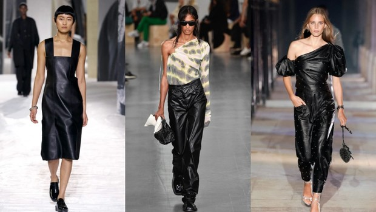
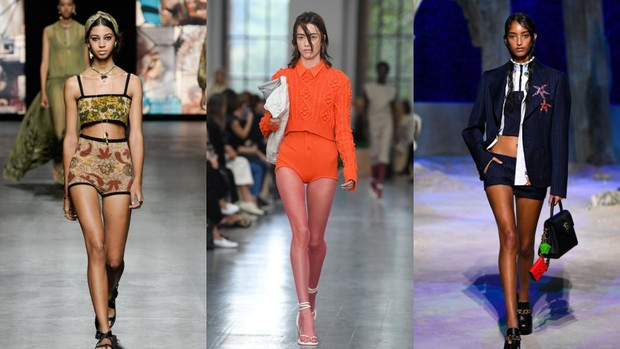
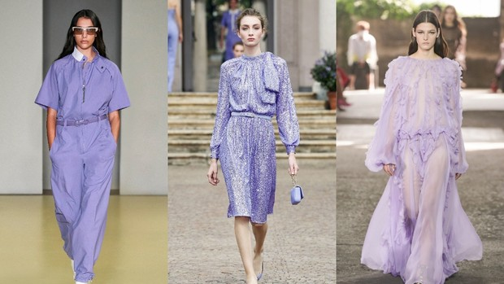
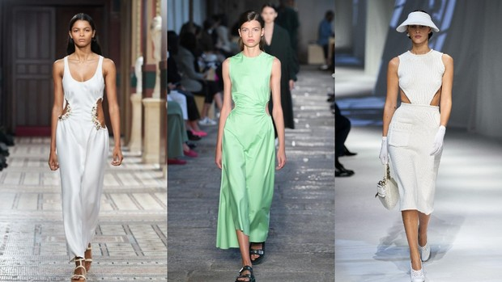
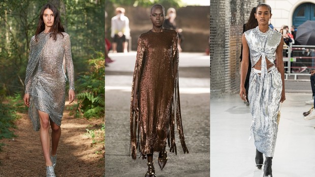
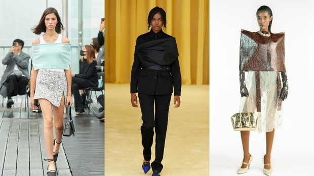

News
Choose a blue coat for spring to wear with jeans
Dolce & Gabbana accuse the Instagram account of Diet Prada of defamation and demand 3 million euros in compensation.
Wear a pantsuit with a short, high-necked sweater like Bella Hadid.
Are there any "adequate" feminists? Zalina Marshenkulova answers silly questions about women's rights.
That's Hot! Paris Hilton stars in Lanvin ad campaign.
Wellness Tip of the Week: Adjust your diet and lifestyle with a genetic test
Quite often, the obvious weight loss formula "calorie deficit + exercise" does not give results, and it is not a matter of motivation or patience. We are all unique, respectively, and we need an individual approach. You can exhaust yourself with hunger, and you can learn more about your body and adjust your diet so that it is comfortable, and at the same time confidently move towards the result. A DNA test can help in this — your body itself will tell you about the ideal diet, suitable physical activity, features of the appearance of hunger and satiety, personal recommendations for taking suitable forms of vitamins and dietary supplements, and experts will help you decipher the data obtained and make a nutrition plan. We learned from a MyGenetics expert how the DNA test works, what it can tell us about our body, and how to adjust our diet and diet based on the results.
Lyudmila Seledtsova
If you want know more , click this
Can Sleep Mode Save You from depression
We all know that sleep is good for the circadian rhythm of the body and for overall well-being. But according to new research, falling asleep and waking up at the same time is also necessary for mental health. Scientists have found that irregular routines increase the risk of depression in a group of young people. Why? All the details are below.
How the study was conducted The University of Michigan experiment involved 2,100 young doctors — data on their sleep and mood during the year formed the basis of the analysis. To gather information, participants wore special sleep-tracking devices and reported their emotional state daily. They were also checked for depression every few months. It is worth noting that the average age of the subject was 27 years, and each participant was under constant stress due to their profession, which says a lot about the sample.What it showed According to this study, during periods when participants ' sleep patterns were more "shaky," they were more likely to report symptoms of depression in their quarterly questionnaires. The same went for the mood.
As professor and co-author of the study Srijan Sen, MD, PhD, summarizes, " These results highlight that sleep patterns are an underappreciated factor that affects the risk of depression and overall well-being." It is also interesting that in early studies, the main variable was most often the duration of sleep-scientists from South Korea have already proved that the lack of time spent in bed has a cumulative effect and thus provokes stress, without taking into account such indicators as the regime. So now, when you once again sit up late, ignoring the regime, and the next morning you feel crushed-do not be surprised. In the daily routine, as in any other useful habit, regularity is important.
Jewelry Trends - Spring/Summer 2021
Dior has unveiled a new collection of Gem Dior jewelry and watches. Its name is borrowed from the eponymous collection of high jewelry art, released two years ago. The English word Gem ("gem") is somewhat consonant with the French phrase J'aime ("I love" or "I like"). "This collection has a modern spirit. This is a style that I would describe as abstract-natural, " says Victoire de Castellane, who heads Dior Joaillerie.
At the same time, some references of the collection are quite specific. For example, the shape of one of the bracelets is inspired by the scraps that Christian Dior used in his work as fabric samples.
Another motif was the rough shape of the rough stones. In total, the collection consists of 11 pieces of jewelry and seven watches-all items are united by a geometry that is usually not typical of the Dior jewelry line.
** IMPORTANT LINKS**
GOLD RING: https://amzn.to/3nVkd9N
DIAMOND RING: https://amzn.to/2HjwFAf
CHAIN RING: https://amzn.to/2UYQsIJ
If you guys want designer look a likes this is the place to find them. Amazon really impressed me with how well the quality is holding up on these Jewelry pieces. From the rings to the necklaces, and do not even get me started on the earrings, ughh AMAZING.
Have you ever had trouble choosing clothes or felt out of fashion ? If so, then I have also had such situations. And so one day I came across a fashion magazine. And that's when I had the idea to create my own magazine, but since this is the 21st century, I did it in the form of a website. I was inspired by sites like Vogue, Elle, and Bazaar.
My goal is to create a website that gives information about fashion.The purpose of my project is to provide the user with information about the main trends of a particular year and season, give fashion tips, give tips for grooming yourself, and so on.
The advantages of this site are that this site is safe and reliable. And you can ask for the help of the author of this site at any time. Programming languages that were used during the creation of this site: HTML , Css , Jquery , Javascript , Bootstrap.
Contact me:
Outlook:201340@astanait.edu.kz Instagram: __taszhanova__ VK: Taszhan Alua
The main trends of spring 2021
The series of Fashion Weeks has come to an end, which means it's time to take stock. Here are the main trends of the coming spring, which we saw on the Paris, Milan, New York and London catwalks.
In the new season, the skin is slowly moving from the winter wardrobe to the summer one. What is noteworthy, the color of the fabric must be black. And if the total bow in the style of "Matrix" is too much for you, then add the skin in portions, as at the Sportmax show.
A few seasons ago, we were enthusiastically looking for the longest Bermuda shorts in the stores. Now, the designers decided that the shorts should be very short. And it is better if they are made of soft knitwear.
Among the pastel shades that became the main trend a couple of years ago, the leading position is occupied by lavender. It is especially well combined with beige and white, but the "solo" favorite color of all influencers looks no less impressive.
Previously, to emphasize the waist, girls wore leather belts. Now it's just enough to choose a dress with round necklines — look for such at Gabriela Hearst, Fendi and BOSS.
To shine, you don't need a special occasion, designers tell us. Therefore, feel free to wear sequins and crystals to work, dates and ordinary walks (for example, in the woods, as was the case at the Burberry show).
The feelings that the designers experienced during the quarantine were expressed in the new collections not only in the form of protective masks, but also in the" shackled " hands. And, as it turned out, the "feeling of complete helplessness" looks very stylish.
